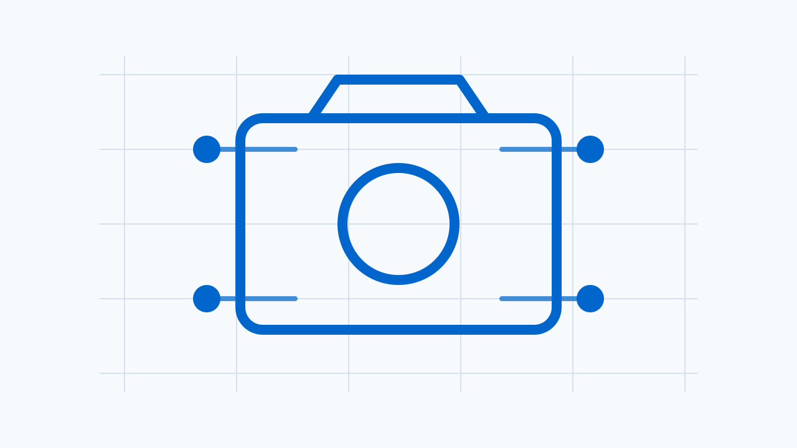

Camera SWNewsletter - 2026-09-28
이번 주 뉴스레터에서는 지난 8월 26일 출시된 CameraX 1.6.2의 주요 버그 수정과 기기별 호환성 패치를 다룹니다. 또한 리눅스 커널 메일링 리스트를 통해 제안된 Renesas RZ/V2H EVK의 ISP 및 IVC 활성화, Samsung S5K3T2 이미지 센서 드라이버 추가, Intel IPU7의 펌웨어 리소스 누수 수정 패치를 분석합니다. 마지막으로 Android Studio의 새로운 AI 에이전트 통합이 네이티브 개발 워크플로에 미치는 영향을 살펴봅니다.
이번 주 3줄 브리핑
- CameraX 1.6.2 릴리스를 통해 Android 17 기기의 동적 범위 프로필 충돌 및 Samsung 기기들의 YUV 왜곡, 토치 캡처 실패 등 기기 호환성 이슈가 해결되었습니다.
- 리눅스 커널 미디어 서브시스템에서 Renesas RZ/V2H의 Mali-C55 ISP 활성화 및 Samsung S5K3T2 센서 드라이버 추가 등 SoC 하위 카메라 스택의 하드웨어 지원이 확장되고 있습니다.
- Intel IPU7 드라이버의 ISYS 펌웨어 리소스 해제 패치 제안으로 카메라 시스템의 장기 실행 시 발생할 수 있는 메모리 누수 및 안정성 위험이 개선될 전망입니다.
Android Studio, 개발자 선택에 따른 다양한 AI 코딩 에이전트 통합 기능 발표
Android Developers Blog (2026년 9월 24일)

개발 도구에 내장된 고정된 AI 비서 대신, 우리 팀의 코딩 표준과 보안 정책에 맞는 맞춤형 AI 에이전트를 직접 골라 쓸 수 있다면 어떨까요?
이번 주 Android Developers Blog를 통해 발표된 내용에 따르면, Android Studio에 개발자가 선호하는 임의의 AI 코딩 에이전트와 자율 도구를 자유롭게 통합할 수 있는 새로운 기능이 추가되었습니다. 이 업데이트는 개발자가 특정 AI 모델이나 도구에 종속되지 않고, 자신만의 개발 워크플로에 최적화된 에이전트를 선택하여 사용할 수 있도록 개방성과 유연성을 극대화하는 데 초점을 맞추고 있습니다.\n\n엔지니어링 생산성을 높이기 위해 많은 팀들이 특화된 AI 코딩 에이전트나 맞춤형 엔터프라이즈 하네스를 도입하고 있는 흐름에 발맞춘 조치입니다. 개발자는 이제 Android Studio 내에서 자신이 선호하는 타사 AI 에이전트를 연동하여 코드 생성, 리팩토링, 디버깅 등 다양한 작업을 수행할 수 있습니다.\n\n### 네이티브 카메라 개발 워크플로에서의 활용\n\n이 변경은 Android 카메라 런타임이나 HAL API 계약에 직접적인 변화를 주는 것은 아닙니다. 그러나 C++ 네이티브 코드를 다루는 Camera HAL 및 드라이버 개발 팀의 워크플로에 긍정적인 영향을 미칠 수 있습니다. 복잡한 네이티브 코드의 정적 분석, 메모리 누수 탐지, 혹은 Clang/LLVM 툴체인 마이그레이션 시나리오에서 팀에 특화된 AI 에이전트를 활용하여 보일러플레이트 코드를 신속하게 작성하거나 오류를 진단하는 데 도움을 받을 수 있습니다.\n\n개발 팀은 이번 통합 기능을 통해 사내 보안 가이드라인을 준수하는 엔터프라이즈 AI 하네스를 Android Studio에 연동함으로써, 민감한 카메라 HAL 소스 코드가 외부로 유출될 위험 없이 안전하게 AI 도구를 활용하는 방안을 검토할 수 있습니다.
네이티브 개발 툴체인 담당자는 Android Studio의 AI 에이전트 통합 기능을 활용하여, C++ 네이티브 카메라 HAL 코드 개발 시 사내 코딩 표준 및 보안 가이드라인이 적용된 커스텀 에이전트를 연동하는 워크플로를 설계할 수 있습니다. 이를 통해 빌드 스크립트 작성이나 정적 분석 경고 해결 시의 생산성 변화를 모니터링할 수 있습니다.
Renesas RZ/V2H EVK 보드, Arm Mali-C55 ISP 및 IVC 하드웨어 활성화 패치 제안
lore.kernel.org linux-media list (2026년 9월 25일)

새로운 SoC 플랫폼에서 카메라 하드웨어를 구동하기 위한 첫 단추는 디바이스 트리에서 하드웨어 노드를 올바르게 선언하는 것부터 시작됩니다.
이번 주 리눅스 커널 미디어 서브시스템 메일링 리스트를 통해 Renesas RZ/V2H EVK 보드에서 핵심 이미지 처리 하드웨어를 활성화하기 위한 디바이스 트리 패치 시리즈 v2가 제안되었습니다. 이번 패치는 RZ/V2H 이미지 비디오 코덱인 IVC 및 Arm Mali-C55 ISP 노드를 시스템에 추가하고, 이들 간의 비디오 엔드포인트를 연결하는 것을 골자로 합니다.\n\n제안된 패치에 따르면, 하드웨어의 정밀한 제어를 위해 선택적인 ISP DMA 라인 틱 인터럽트와 IVC 프레임 시작 및 정지 인터럽트가 디바이스 트리에 정의되었습니다. 패치를 적용하고 적절한 리눅스 드라이버를 활성화하면, 부팅 콘솔에서 Mali-C55 ISP 9000043.31032022.0 하드웨어가 정상적으로 감지되는 것을 확인할 수 있습니다.\n\n### 하위 스택 하드웨어 활성화의 의미\n\n이 변경은 상위 Android 카메라 HAL이나 Camera2 API에 즉각적인 변화를 주지는 않지만, 해당 SoC를 기반으로 하는 Android 기기에서 카메라 파이프라인을 구축하기 위한 필수적인 하위 스택 지원 단계입니다. ISP와 코덱 노드가 커널 레벨에서 올바르게 바인딩되어야만 향후 V4L2 서브시스템 및 libcamera를 거쳐 Android HAL3 스트림 구성으로 이어지는 이미지 파이프라인을 완성할 수 있습니다.\n\n현재 이 패치는 v2 리비전 상태로 커널 커뮤니티의 검토를 거치고 있으며, 최종 머지 여부는 지속적으로 추적해야 합니다. 개발 팀은 향후 이 플랫폼을 도입할 때 디바이스 트리 구성과 인터럽트 설정이 하드웨어 사양과 일치하는지 검증하는 기초 자료로 활용할 수 있습니다.
SoC 플랫폼 엔지니어는 제안된 디바이스 트리 설정을 기반으로 커널 부팅 시 Mali-C55 ISP가 정상적으로 감지되는지 확인해야 합니다. 특히 ISP DMA 라인 틱 인터럽트와 IVC 프레임 시작/정지 인터럽트가 시스템 스케줄러 및 실시간 프레임 드롭에 미치는 영향을 모니터링하여, 향후 Android HAL 스트림 구성 시 레이턴시 버짓을 산정하는 기초 데이터로 활용해야 합니다.
Samsung S5K3T2 20메가픽셀 이미지 센서, 리눅스 커널 드라이버 추가 패치 제안
lore.kernel.org linux-media list (2026년 9월 24일)

새로운 이미지 센서 하드웨어를 플랫폼에 통합하려면 커널 드라이버 레벨에서 센서 제어와 데이터 레인 설정이 선행되어야 합니다.
이번 주 리눅스 커널 미디어 서브시스템 메일링 리스트에 Samsung S5K3T2 이미지 센서의 공식 바인딩 및 드라이버를 추가하기 위한 패치 시리즈 v3이 제출되었습니다. Samsung S5K3T2는 4개의 MIPI D-PHY 레인을 사용하는 20메가픽셀 고해상도 CMOS 이미지 센서로, Xiaomi POCO F3 기기의 전면 카메라 등에 탑재된 하드웨어입니다.\n\n제출된 드라이버는 Qualcomm CAMSS 드라이버와 함께 해당 스마트폰에서 직접 작성되고 테스트되었습니다. 비록 메인라인 커널에 Xiaomi POCO F3의 디바이스 트리가 아직 포함되어 있지 않아 바인딩의 직접적인 사용자는 명시되지 않았으나, 드라이버 자체는 v4l2-compliance 테스트 등을 거쳐 기능적 정합성을 검증받았습니다.\n\n### 센서 드라이버 추가의 의미\n\n이 패치는 커널 드라이버 레벨의 변경으로, 직접적인 Android Camera HAL3 API 계약을 변경하지는 않습니다. 그러나 새로운 센서 드라이버가 리눅스 커널에 추가되는 것은 해당 센서를 사용하는 Android 기기에서 카메라 파이프라인을 구현하기 위한 필수적인 하위 스택 지원입니다.\n\n4레인 MIPI D-PHY 설정을 통해 고해상도 이미지 데이터를 ISP로 전송할 수 있는 기반이 마련되었으므로, 향후 이 센서를 탑재하는 플랫폼 개발 시 드라이버 재작성 비용을 크게 줄일 수 있습니다. 현재 이 패치는 v3 리비전 상태로 커뮤니티 검토 중이며, 최종 머지 여부를 지속적으로 모니터링해야 합니다.
카메라 드라이버 개발자는 Samsung S5K3T2 센서 도입 시 제안된 드라이버의 MIPI D-PHY 레인 설정과 Qualcomm CAMSS 드라이버와의 연동 구조를 참고해야 합니다. 특히 4레인 전송 시의 클럭 설정 및 해상도 전환 타이밍이 V4L2 서브시스템을 거쳐 Android HAL의 스트림 구성에 미치는 레이턴시 영향을 사전에 검증해야 합니다.
Intel IPU7 드라이버, 디바이스 제거 시 ISYS 펌웨어 리소스 누수 수정 패치 제안
lore.kernel.org linux-media list (Intel IPU) (2026년 9월 24일)
장치 드라이버의 프로브 단계만큼이나 중요한 것은 장치가 제거될 때 할당했던 리소스를 흔적 없이 되돌려놓는 일입니다.
이번 주 리눅스 커널 미디어 서브시스템 메일링 리스트를 통해 Intel IPU7 드라이버의 ISYS 펌웨어 리소스 관리 결함을 수정하는 패치가 제안되었습니다. 기존 드라이버의 isys_remove 함수는 등록된 ISYS 장치를 해체하는 과정을 수행하지만, 성공적인 프로브 이후 정상적으로 장치가 제거될 때 ipu7_fw_isys_release 함수를 호출하지 않는 누락이 있었습니다.\n\n이로 인해 ipu7_fw_isys_init 함수에 의해 초기화되었던 ISYS 펌웨어 관련 리소스들이 장치 제거 이후에도 커널 메모리에 그대로 할당된 상태로 방치되는 문제가 발생했습니다. 흥미롭게도 프로브 과정에서 오류가 발생했을 때의 예외 처리 경로에서는 이미 해당 릴리스 헬퍼 함수를 정상적으로 호출하여 리소스를 해제하고 있었습니다. 이번 패치는 정상적인 제거 경로에서도 동일하게 ipu7_fw_isys_release 함수가 호출되도록 로직을 보완합니다.\n\n### 드라이버 리소스 관리의 중요성\n\n이 변경은 직접적인 Android Camera HAL API 계약을 변경하지는 않지만, 카메라 서브시스템의 장기 안정성에 직접적인 영향을 미치는 하위 스택 개선 사항입니다. 특히 카메라 모듈의 핫플러그나 전원 관리 시나리오에서 드라이버가 반복적으로 로드 및 언로드될 때, 이러한 리소스 누수는 시스템 메모리 고갈이나 커널 패닉으로 이어질 수 있습니다.\n\nIntel IPU7 플랫폼을 사용하는 시스템 엔지니어는 해당 패치를 적용하여 장치 제거 및 재부팅 시나리오에서 메모리 누수가 발생하지 않는지 검증해야 합니다. 현재 이 패치는 제안 상태로 검토 중이며, 최종 머지 여부를 지속적으로 추적해야 합니다.
카메라 드라이버 및 시스템 엔지니어는 Intel IPU7 드라이버 사용 시 장치 제거 및 재로드 시나리오에서 메모리 누수 여부를 모니터링해야 합니다. 특히 isys_remove가 호출되는 전원 관리 서스펜드/레줌 시나리오나 드라이버 언로드 시 ISYS 펌웨어 리소스가 정상적으로 해제되는지 커널 메모리 할당 지표를 통해 검증해야 합니다.
지난 소식 (Catch-up)
CameraX 1.6.2 릴리스, Android 17 동적 범위 충돌 및 주요 기기별 호환성 버그 해결
Android Developers Latest Updates (2026년 8월 26일)

새로운 Android 버전이나 특정 기기에서 카메라 앱이 갑자기 종료되거나 이미지가 왜곡되는 현상을 겪고 있다면, 이번 프레임워크 업데이트가 실마리가 될 수 있습니다.
지난 2026년 8월 26일에 공개된 CameraX 1.6.2 릴리스는 개발 환경의 빌드 안정성부터 최신 플랫폼 및 기기 호환성까지 폭넓은 버그 수정을 담고 있습니다. 해당 업데이트는 특히 최신 Android 17 환경과 특정 하드웨어 제조사 기기에서 발생하던 치명적인 런타임 오류들을 정밀하게 조준하여 해결했습니다.
가장 주목할 부분은 Android 17 이상 기기와의 호환성 확보입니다. 일부 최신 기기가 STANDARD_SMPTE_2094_50 같은 새로운 동적 범위 프로필을 노출할 때, 이전 버전의 CameraX 라이브러리가 이를 인식하지 못해 NullPointerException 또는 IllegalArgumentException을 일으키며 작동을 멈추던 문제가 해결되었습니다. 또한 새로운 JDK 버전에서 전이적으로 가져온 JSpecify 타입 어노테이션을 해석할 때 발생하던 컴파일러 충돌도 함께 수정되어 개발 환경의 빌드 안정성이 향상되었습니다.
기기별 특이 동작에 대한 정밀 대응
1.6.2 릴리스는 현업에서 자주 보고되는 특정 기기들의 하드웨어 호환성 문제를 다수 해결했습니다. Samsung Z Fold 4 기기에서 YUV 포맷 출력 시 이미지 왜곡을 유발하던 특정 해상도 크기를 출력 대상에서 제외하는 조치가 취해졌습니다. 아울러 Samsung A53 기기에서 비디오 캡처가 바인딩된 상태로 토치를 켜고 사진을 찍을 때 간헐적으로 촬영에 실패하던 현상과, 초광각 카메라에서 플래시를 사용할 때 이미지가 어둡게 나오던 노출 부족 문제도 수정되었습니다.
미디어 파이프라인의 일관성도 개선되었습니다. 비디오 캡처와 함께 미리보기 안정화 기능을 사용할 때, 미리보기 유스케이스가 활성화되어 있지 않더라도 일관된 결과를 반환하도록 기능 그룹 API의 동작을 바로잡았습니다. 또한 JPEG 인코더가 마커 앞에 채움 바이트를 추가하여 사진 저장에 실패하던 문제를 해결하기 위해 ExifInterface 종속성을 업데이트했습니다.
이와 더불어 이전 버전에서 발생하던 다양한 기능적 제약 사항들도 함께 정비되었습니다. 예를 들어 지원되지 않는 선호 기능이 잘못 제공되던 문제를 해결하기 위해 필요한 유스케이스가 충족되지 않으면 기능이 올바르게 필터링되도록 로직을 보완했습니다. 또한 특정 세션 구성에서 미리보기 안정화 기능 지원 여부를 조회할 때 잘못된 결과가 반환되던 오류를 수정하여 프레임워크와 HAL 간의 상호작용 신뢰성을 한층 더 높였습니다.
Camera HAL 개발자는 상위 프레임워크가 새로운 동적 범위 프로필을 안전하게 처리할 수 있도록 HAL 레벨에서 노출하는 프로필 메타데이터의 정합성을 검증해야 합니다. 특히 Samsung Z Fold 4나 A53과 같이 특정 스트림 조합이나 해상도에서 발생하는 왜곡 및 토치 연동 실패 현상은 HAL의 스트림 구성 검증 로직과 센서 제어 타이밍을 점검하는 계기로 삼아야 합니다.
참고자료
- CameraX Release Notes - CameraX 1.6.2
- [PATCH v2 0/4] arm64: dts: renesas: Enable ISP and IVC on RZ/V2H EVK — 전체 패치 시리즈
- [PATCH v3 0/2] media: i2c: Samsung S5K3T2 image sensor — 전체 패치 시리즈
- [PATCH] media: staging/ipu7: release ISYS firmware resources on remove — 전체 패치 시리즈
- Build your way: Use any AI agent of your choice in Android Studio